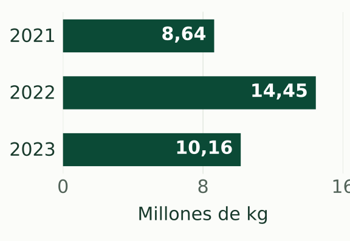

Flora · Madre de Dios
Castaña amazónica
Bertholletia excelsa
01 · Lo esencial
Un fruto estrechamente ligado al bosque de Madre de Dios.

Castaña con cáscara registrada · MADRE DE DIOS · 2023
SERFOR · dato preliminar, redondeado. Ver cifra exacta y fuente.
- Dónde
- Bosques de Madre de Dios.
- Personas
- Recolectores, concesionarios y comercio local.
- Por qué importa
- Vincula el bosque con una economía regional.
Para entenderEl árbol, la recolección y las personas
El árbol y su ciclo
La castaña es un árbol de la familia Lecythidaceae. Sus frutos tienen una cubierta leñosa y contienen semillas: la parte que se aprovecha como alimento. La guía de SERFOR de 2019 incluye su descripción botánica entre los productos forestales no maderables de Madre de Dios.
Fuente: SERFOR, guía de 2019, ficha de castaña.
Brasil · estudio de 2010Las flores también conectan al árbol con los insectos. Santos y Absy observaron visitas de abejas grandes en Itacoatiara, Amazonas, al estudiar la polinización . Es evidencia de esa localidad brasileña; no constituye un inventario de polinizadores de Madre de Dios.
La zafra
La zafra es la temporada de recolección. Se recogen los frutos caídos y se abren para extraer las semillas, que todavía conservan su propia cáscara. No son lo mismo la cubierta del fruto y la cáscara de cada semilla.
Un estudio de concesiones de Madre de Dios publicado en 2015 describe la recolección entre enero y abril. Esa referencia explica el trabajo estudiado; no fija el calendario ni las autorizaciones de una campaña actual.
Fuentes: Thomas y colaboradores (2017); Rockwell y colaboradores (2015).
Del bosque al mercado
Tras la recolección, las semillas con cáscara pueden pasar por el pelado y la comercialización. OSINFOR describe una cadena que vincula el bosque con compradores y empresas. Por eso, al leer estadísticas hay que distinguir castaña con cáscara de castaña pelada.
- Fruto caído
- Semillas con cáscara
- Pelado
- Comercialización
Personas y territorio
Recolectores y concesionarios aportan conocimiento sobre los árboles y sus cosechas. En Madre de Dios, Thomas y colaboradores contrastaron ese conocimiento con mediciones de campo. Su estudio muestra una forma de participación en la investigación; no describe a todas las familias ni permite atribuir las mismas prácticas a comunidades indígenas.
Concesiones castañeras
Una concesión establece un derecho de uso del recurso bajo condiciones de manejo. El aprovechamiento forestal requiere diferenciar el recurso, el área y las actividades estudiadas. Contar concesiones no es contar recolectores ni árboles.
Contexto técnico: OSINFOR (2024).
Conservación y desafíos
OSINFOR documenta presiones como deforestación, invasiones y superposición con derechos mineros. La relación entre extracción de madera y producción de castaña también ha sido estudiada en concesiones de Madre de Dios. Los resultados corresponden a las condiciones observadas: no garantizan que cualquier manejo conserve el bosque o mantenga las cosechas.
Fuentes: OSINFOR (2024); Rockwell y colaboradores (2015).
Glosario
- Zafra
- Temporada de recolección de la castaña.Contexto: Rockwell y colaboradores (2015).
- Concesión
- Derecho de uso de un recurso forestal, sujeto a condiciones y obligaciones de manejo.Contexto: OSINFOR (2024).
- Aprovechamiento forestal
- Uso de recursos del bosque; puede comprender madera u otros productos, según el manejo aplicable.Contexto: OSINFOR (2024).
- Producto forestal no maderable
- Producto del bosque distinto de la madera, como frutos o semillas.Contexto: SERFOR, guía de 2019.
- Polinización
- Transferencia del polen a la parte receptora de una flor, paso necesario para la fecundación.Contexto: Santos y Absy (2010).
Datos y fuentesCifras regionales, documentos y límites de interpretación
Producción registrada · MADRE DE DIOS
Los anuarios de SERFOR presentan registros de producción forestal. Esta selección conserva la categoría, la unidad y el ámbito de las tablas regionales. Las tres fuentes marcan los datos como preliminares: no deben interpretarse como un censo de toda la cosecha.

| Año | Valor (kg) | Fuente |
|---|---|---|
| 2021 | 8 638 185 | SERFOR · registro 2021 |
| 2022 | 14 447 374,26 | SERFOR · registro 2022 |
| 2023 | 10 156 532,82 | SERFOR · registro 2023 |
Se comparan registros con la misma categoría, unidad y ámbito. No se mezclan con castaña pelada ni con totales nacionales; no se atribuye una causa a la variación entre años.
Descargar CSVCinco registros: la serie regional, el contraste nacional de 2021 y la categoría pelada de 2023. Transcripción de cifras públicas con sus fuentes, fechas y notas.
2021 · MADRE DE DIOS · Ver registro y límites
- Nombre del indicador
- Producción registrada de castaña con cáscara
- Valor
- 8 638 185
- Unidad
- kg
- Año del dato
- 2021
- Ámbito geográfico
- Madre de Dios
- Fuente
- SERFOR. GORES y ATFFS; compilación SERFOR.
- Publicación / base
- Anuario Forestal y de Fauna Silvestre 2021. Año de publicación en el repositorio: 2022. Cuadro 35.
- Enlace original
- Registro de SERFOR · PDF: Cuadro 35
- Revisión EcoSelva
- Limitaciones
- Información preliminar según la fuente. Producción registrada; no equivale a un censo de toda la cosecha. Categoría castaña con cáscara; no incluye la categoría castaña pelada. Se conserva la precisión de la tabla regional original.
2022 · MADRE DE DIOS · Ver registro y límites
- Nombre del indicador
- Producción registrada de castaña con cáscara
- Valor
- 14 447 374,26
- Unidad
- kg
- Año del dato
- 2022
- Ámbito geográfico
- Madre de Dios
- Fuente
- SERFOR. Autoridades Regionales Forestales y de Fauna Silvestre (ARFFS); compilación SERFOR.
- Publicación / base
- Anuario Forestal y de Fauna Silvestre 2022. Año de publicación en el repositorio: 2023. Tabla 39.
- Enlace original
- Registro de SERFOR · PDF: Tabla 39
- Revisión EcoSelva
- Limitaciones
- Información preliminar según la fuente. Producción registrada; no equivale a un censo de toda la cosecha. Categoría castaña con cáscara; no incluye la categoría castaña pelada. Se conserva la precisión de la tabla regional original.
2023 · MADRE DE DIOS · Ver registro y límites
- Nombre del indicador
- Producción registrada de castaña con cáscara
- Valor
- 10 156 532,82
- Unidad
- kg
- Año del dato
- 2023
- Ámbito geográfico
- Madre de Dios
- Fuente
- SERFOR. Autoridades Regionales Forestales y de Fauna Silvestre (ARFFS); compilación SERFOR.
- Publicación / base
- Anuario Forestal y de Fauna Silvestre 2023. Año de publicación en el repositorio: 2024. Tabla 40.
- Enlace original
- Registro de SERFOR · PDF: Tabla 40
- Revisión EcoSelva
- Limitaciones
- Información preliminar según la fuente. Producción registrada; no equivale a un censo de toda la cosecha. Categoría castaña con cáscara; no incluye la categoría castaña pelada. Se conserva la precisión de la tabla regional original.
Dos tablas, dos ámbitos · 2021
El mismo anuario presenta valores distintos para la categoría castaña con cáscara. EcoSelva conserva ambos tal como aparecen, identifica su ámbito y no asigna una causa a la diferencia.
- Tabla A · MADRE DE DIOS
- 8 638 185 kg · 2021
SERFOR, Cuadro 35, tabla regional.
Ver registro regional - Tabla B · PERÚ
- 8 638 185,12 kg · 2021
SERFOR, Cuadro 36, tabla nacional.
Ver registro nacional
Los valores no se consideran directamente equivalentes mientras no se verifique que utilizan el mismo periodo, definición y universo.
2021 · PERÚ · Registro nacional y límites
- Nombre del indicador
- Producción registrada de castaña con cáscara
- Valor
- 8 638 185,12
- Unidad
- kg
- Año del dato
- 2021
- Ámbito geográfico
- Perú
- Fuente
- SERFOR. GORES y ATFFS; compilación SERFOR.
- Publicación / base
- Anuario Forestal y de Fauna Silvestre 2021. Año de publicación en el repositorio: 2022. Cuadro 36.
- Enlace original
- Registro de SERFOR · PDF: Cuadro 36
- Revisión EcoSelva
- Limitaciones
- Información preliminar según la fuente. Producción registrada; no equivale a un censo de toda la cosecha. Ámbito nacional. No se incorpora a la serie regional ni se sustituye con este valor el del Cuadro 35.
Otro producto · castaña pelada
Para MADRE DE DIOS, la Tabla 40 del anuario 2023 registra 3 903 605,76 kg de castaña pelada en 2023. Es una categoría distinta de castaña con cáscara. Estas cifras no se suman para obtener una cosecha total ni se usan aquí para calcular un rendimiento de pelado.
2023 · MADRE DE DIOS · Castaña pelada: registro y límites
- Nombre del indicador
- Producción registrada de castaña pelada
- Valor
- 3 903 605,76
- Unidad
- kg
- Año del dato
- 2023
- Ámbito geográfico
- Madre de Dios
- Fuente
- SERFOR. Autoridades Regionales Forestales y de Fauna Silvestre (ARFFS); compilación SERFOR.
- Publicación / base
- Anuario Forestal y de Fauna Silvestre 2023. Año de publicación en el repositorio: 2024. Tabla 40.
- Enlace original
- Registro de SERFOR · PDF: Tabla 40
- Revisión EcoSelva
- Limitaciones
- Información preliminar según la fuente. Producción registrada; no equivale a un censo de toda la cosecha. Categoría castaña pelada. No sumar a castaña con cáscara ni utilizar ambas categorías para calcular un rendimiento de pelado.
Estudios y documentos
Fuentes originales usadas en esta ficha. El año de publicación de un anuario es distinto del año de sus datos; se muestran ambos.
Anuario Forestal y de Fauna Silvestre 2021
SERFOR · publicación: 2022, según el repositorio · anuario estadístico oficial.
Datos de 2021. Cuadros 35 y 36: permite distinguir el registro regional del nacional.
Registro original · PDF, Cuadro 35Anuario Forestal y de Fauna Silvestre 2022
SERFOR · publicación: 2023 · anuario estadístico oficial.
Datos de 2022. Tabla 39: producción regional por producto, con información preliminar.
Registro original · PDF, Tabla 39Anuario Forestal y de Fauna Silvestre 2023
SERFOR · publicación: 2024 · anuario estadístico oficial.
Datos de 2023. Tabla 40: diferencia castaña con cáscara y castaña pelada; página impresa 124, página 125 del PDF.
Registro original · PDF, Tabla 40Guía de Productos Forestales no Maderables en Madre de Dios
SERFOR · 2019 · guía técnica.
Descripción botánica de la castaña. Ficha en la página impresa 92, página 93 del PDF.
Registro original · PDF, ficha de castañaNut Production in Bertholletia excelsa across a Logged Forest Mosaic: Implications for Multiple Forest Use
Cara A. Rockwell y colaboradores · 2015 · artículo científico original, PLOS ONE.
Estudia producción de castaña y extracción de madera en concesiones de Madre de Dios. Sus resultados no representan por sí solos a todo el departamento.
Leer artículo originalNTFP harvesters as citizen scientists: Validating traditional and crowdsourced knowledge on seed production of Brazil nut trees in the Peruvian Amazon
Evert Thomas y colaboradores · 2017 · artículo científico original, PLOS ONE.
Contrasta conocimiento de recolectores y concesionarios con mediciones de campo en Madre de Dios.
Leer artículo originalAnálisis del aprovechamiento de madera en concesiones para castaña en Madre de Dios
OSINFOR · 2024 · informe técnico.
Aporta contexto sobre concesiones, cadena comercial y presiones sobre el territorio. Se usa como estudio fechado, sin presentar sus recuentos como cifras actuales.
Publicación oficial y documentoPolinizadores de Bertholletia excelsa (Lecythidales: Lecythidaceae): interações com abelhas sem ferrão (Apidae: Meliponini) e nicho trófico
Charles F. Santos y Maria L. Absy · 2010 · artículo científico original, Neotropical Entomology.
Observaciones sobre abejas y flores en Itacoatiara, Amazonas, BRASIL. Aporta contexto biológico, con un ámbito distinto de Madre de Dios.
Leer artículo original
Vacíos de información
- Esta selección termina en 2023. No incorpora cifras de 2024–2026 y no las estima; esto no implica que no existan otras publicaciones.
- Falta consolidar una serie con cortes verificables para concesiones y superficie. Los recuentos de documentos de distintas fechas no se presentan como actuales.
- La relación entre las tablas regional y nacional de 2021 queda por verificar. Se mantienen ambos valores y ámbitos.
- Los estudios locales y el ejemplo brasileño no permiten generalizar prácticas, polinizadores o resultados de manejo a todo Madre de Dios.